Install Asterisk
Bagian 1: Login Super User
-
Pertama, buka VirtualBox dan pilih mesin virtual yang telah Anda konfigurasi. Klik dua kali pada mesin virtual atau klik tombol "Start" untuk menjalankan mesin virtual.
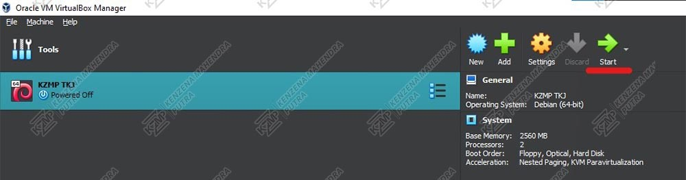 -
Setelah mesin virtual berjalan, login menggunakan akun Anda dengan memasukkan username dan password yang telah Anda buat sebelumnya.

-
Setelah login ke akun Anda, ketik perintah berikut di terminal untuk masuk sebagai superuser:
su
Masukkan password superuser Anda saat diminta. Ini memberikan Anda hak administratif untuk melakukan instalasi.

Bagian 2: Cek Settingan IP
Untuk Mengatur Alamat IP sudah terdapat pada halaman website berikut: Mengatur IP
-
Pastikan alamat ip pada ip a harus sama dengan settingan ip pada network/interfaces
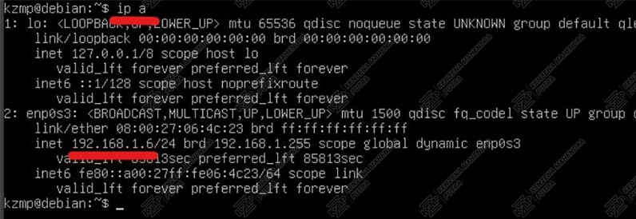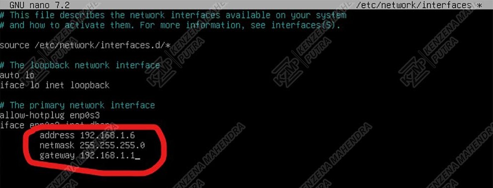
Bagian 3: Mengatur Asterisk
-
Untuk mengatur konfigurasi SIP di Asterisk, ketik perintah berikut di terminal:
nano /etc/asterisk/sip.conf
Ini akan membuka file "sip.conf" di editor nano, tempat Anda dapat menambahkan atau mengubah pengaturan SIP untuk Asterisk.
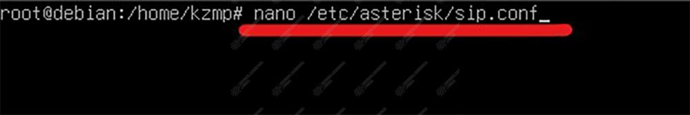 -
Setelah membuka file "sip.conf" di nano, scroll ke bagian paling bawah dan tambahkan teks berikut:
[general]
port=5060
bindaddr=0.0.0.0
context=(namamu)[192168(nomer 01)]
type=friend
context=notIp
secret=12345
host=dynamic[192168(nomer 02)]
type=friend
context=notIp
secret=6789
host=dynamicGantilah (namamu) dengan nama atau konteks yang diinginkan.
Gantilah (nomer 01) dengan no absen anda atau angka yang diinginkan.
Gantilah (nomer 02) dengan no absen temanmu atau angka yang diinginkan.
Keterangan:
[general] sebagai fungsi global pembuatan perintah asterisk.
Port 5060 adalah port yang dipanggil.
[19216820] dan [19216805] adalah nomor kontak yang akan digunakan.
Secret 1234 dan 6789 adalah password sebagai autentikasi.
Contohnya seperti dibawah ini:
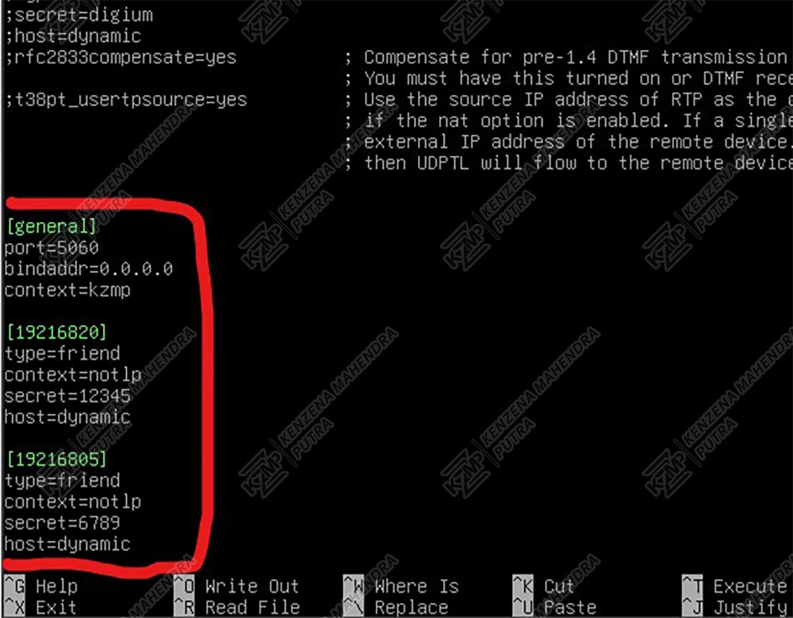 -
Tekan Ctrl + X untuk keluar dari editor nano. Saat diminta untuk menyimpan perubahan, tekan "Y" untuk mengonfirmasi, lalu tekan Enter untuk menyimpan file dan keluar dari editor.
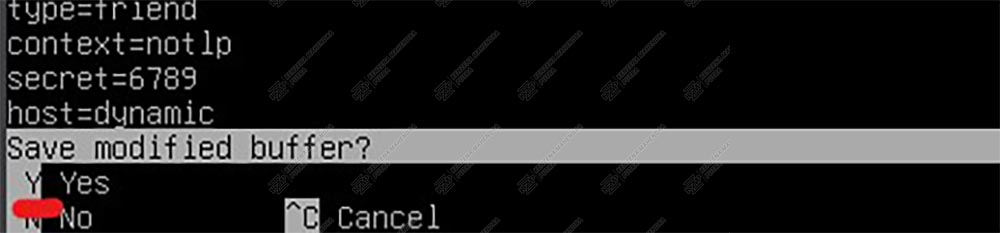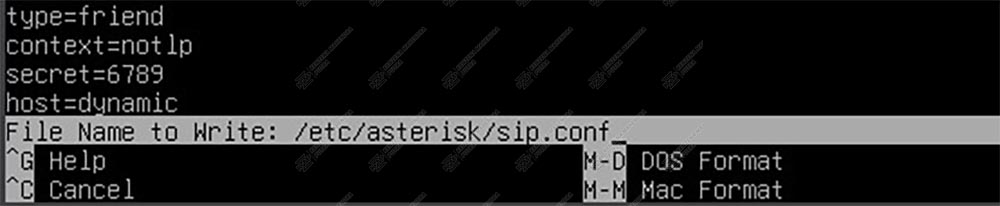 -
Untuk mengatur konfigurasi ekstensi di Asterisk, ketik perintah berikut di terminal:
nano /etc/asterisk/extensions.conf

-
Scroll ke bagian paling bawah dan tambahkan teks berikut:
[tekaje]
[notIp]
exten => 192168(nomer 01), 1, Dial(SIP/192168(nomer 01))
exten => 192168(nomer 02), 1, Dial(SIP/192168(nomer 02))Gantilah (nomer 01) dengan no absen anda atau angka yang anda isi tadi.
Gantilah (nomer 02) dengan no absen anda atau angka yang anda isi tadi.
Keterangan:
[tekaje] adalah fungsi global yang masih terhubung dengan sip.conf
[notIp] nama context yang sesuai pada sip.conf
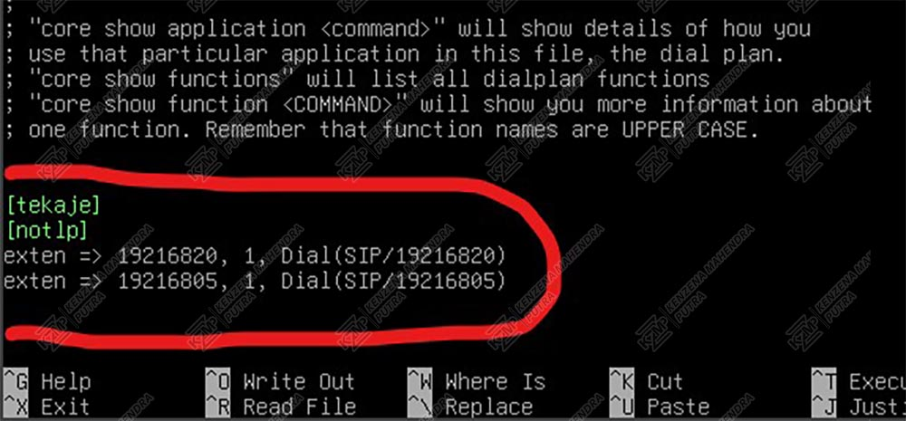 -
Tekan Ctrl + X untuk keluar dari editor nano. Saat diminta untuk menyimpan perubahan, tekan "Y" untuk mengonfirmasi, lalu tekan Enter untuk menyimpan file dan keluar dari editor.
 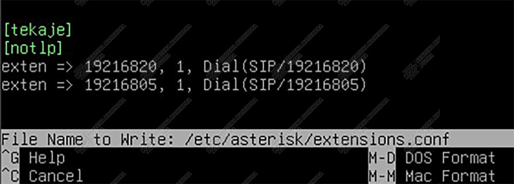
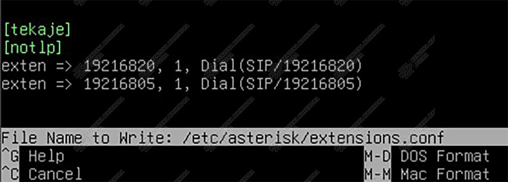 -
Ketik perintah berikut untuk me-restart layanan Asterisk agar perubahan konfigurasi diterapkan:
systemctl restart asterisk.service
Ini akan memulai ulang layanan Asterisk dengan pengaturan baru yang telah Anda buat.
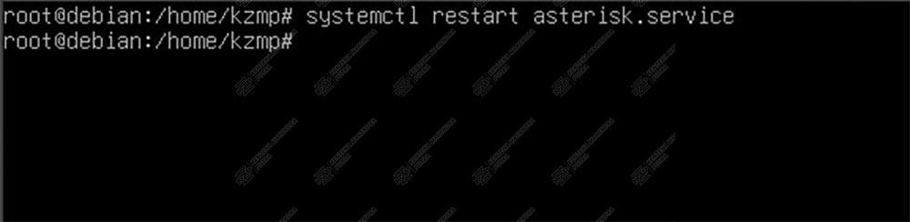
Bagian 4: Mengatur Software Uji Coba
-
Isi kolom dibawah ini sesuai dengan:
Kolom Pertama: Masukkan nomor kontak pertama sesuai konfigurasi SIP, misalnya 19216820.
Kolom Kedua: Masukkan password/secret yang telah Anda atur sebelumnya, misalnya 12345.
Klik Login: Setelah mengisi kedua kolom, klik tombol "Login" untuk menghubungkan Zoiper dengan Asterisk.
-
Setelah login di Zoiper:
Masukkan IP Address: Masukkan alamat IP server Asterisk yang telah Anda konfigurasi, misalnya 192.168.1.6.
Tekan Next: Setelah memasukkan alamat IP, tekan Next untuk melanjutkan proses konfigurasi.
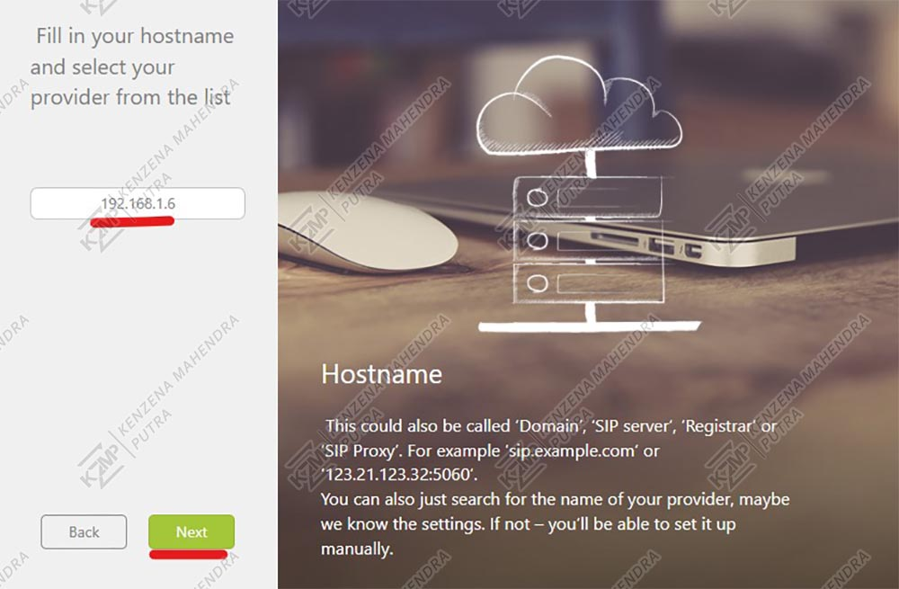 -
Setelah itu tekan Skip

-
Setelah menekan Skip, pastikan SIP UDP berwarna hijau dengan tulisan "Found" yang menandakan koneksi SIP berhasil. Setelah itu, tekan Next untuk melanjutkan.
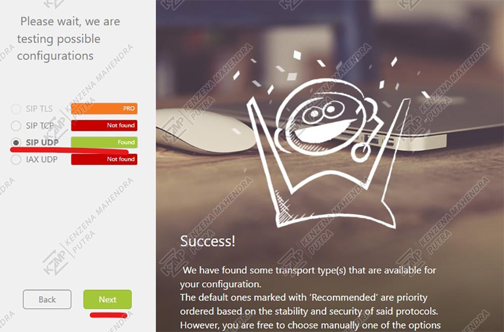 -
Setelah membuka MicroSIP, tekan ikon panah ke bawah pada antarmuka aplikasi untuk membuka menu pengaturan atau pilihan yang lebih lengkap.
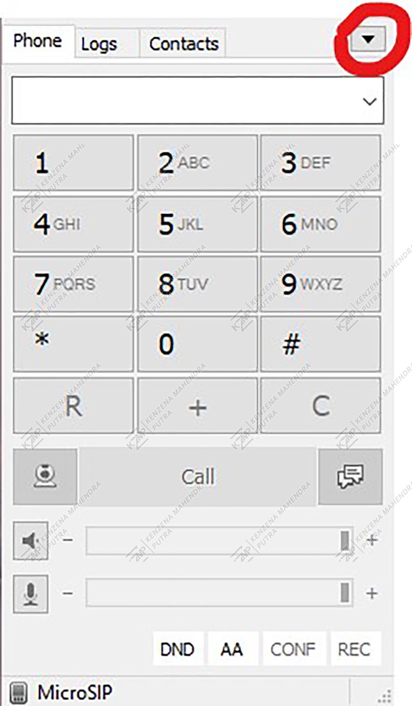 -
Setelah menekan ikon panah ke bawah dan menu muncul, pilih opsi "Add Account..." untuk menambahkan akun baru ke MicroSIP.
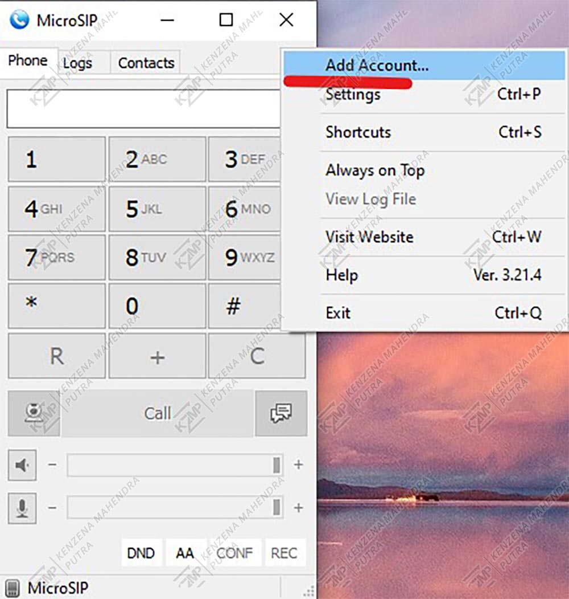 -
Isi SIP Server: Masukkan alamat IP server Asterisk, misalnya 192.168.1.6.
Isi Username: Masukkan nomor kontak kedua, misalnya 19216805.
Isi Domain: Masukkan alamat IP server Asterisk lagi, misalnya 192.168.1.6.
Isi Password: Masukkan password sesuai dengan secret yang telah diatur, misalnya 6789.
Klik Save: Setelah mengisi semua kolom, klik Save untuk menyimpan konfigurasi akun SIP.

Bagian 5: Mengujicoba Zoiper dengan MicroSIP
-
Di MicroSIP, masukkan nomor kontak yang sesuai dengan (nomer 01), misalnya 19216820. Setelah itu, klik Call untuk memulai panggilan.
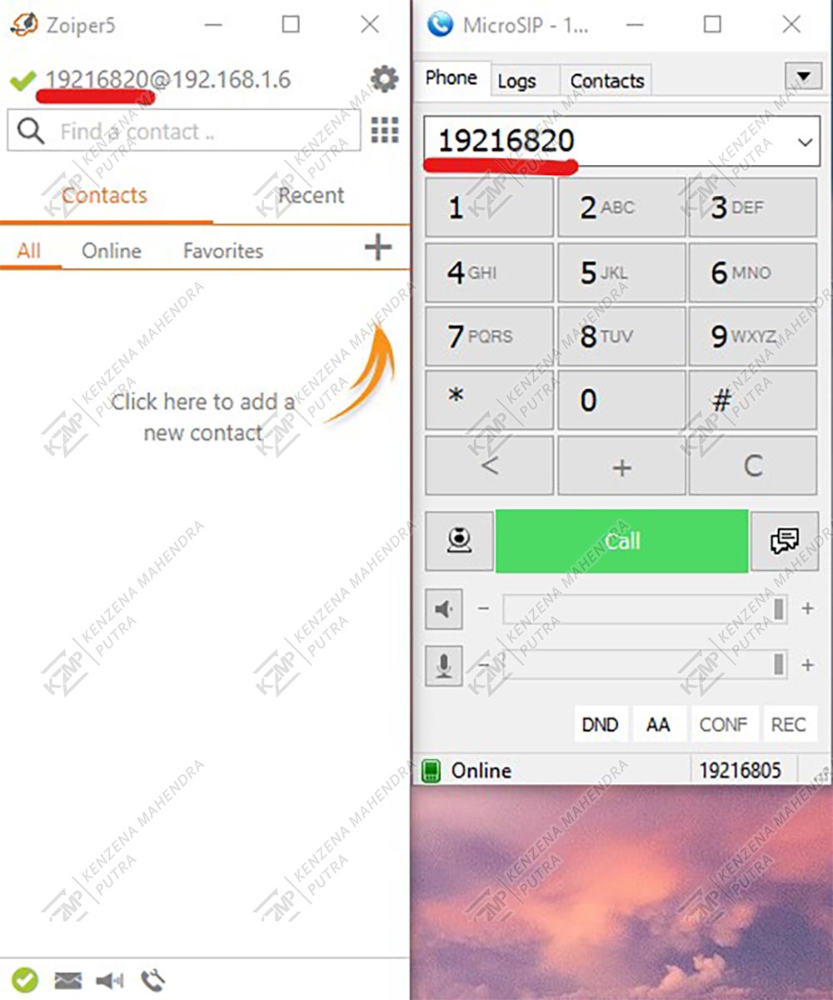 -
Setelah menekan Call di MicroSIP, jika panggilan masuk muncul di Zoiper, itu berarti konfigurasi berhasil dan kedua perangkat SIP telah terhubung dengan baik.
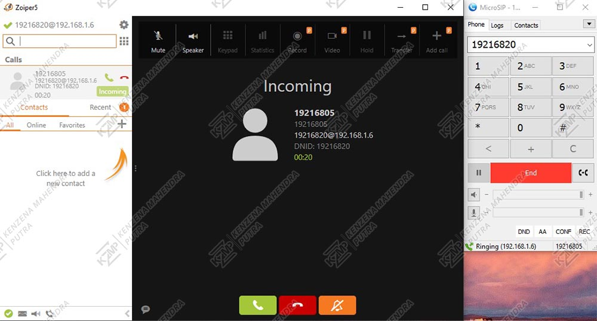 -
Selanjutnya, di Zoiper, masukkan nomor kontak kedua yang telah dikonfigurasi sebelumnya, misalnya 19216805, lalu tekan Dial untuk memulai panggilan.
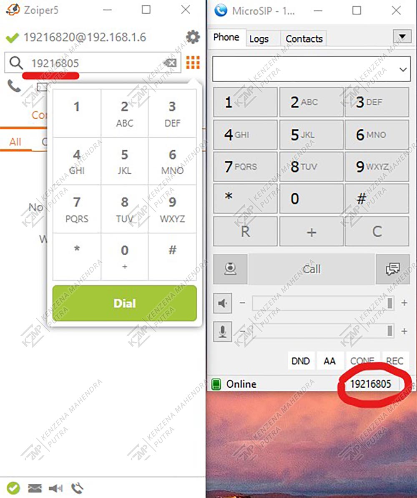 -
Jika panggilan masuk muncul di MicroSIP setelah Anda melakukan dial dari Zoiper, itu berarti konfigurasi berhasil, dan kedua perangkat SIP telah terhubung dengan baik.
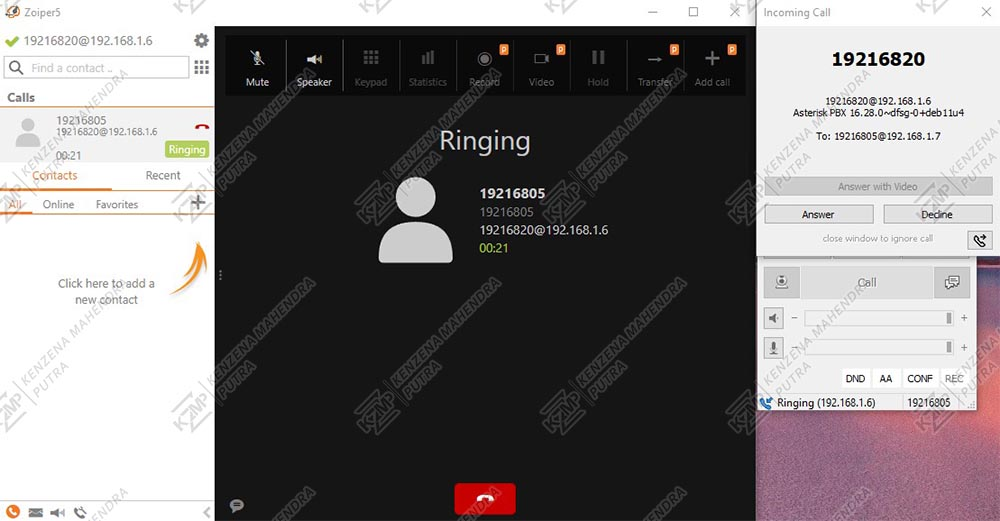